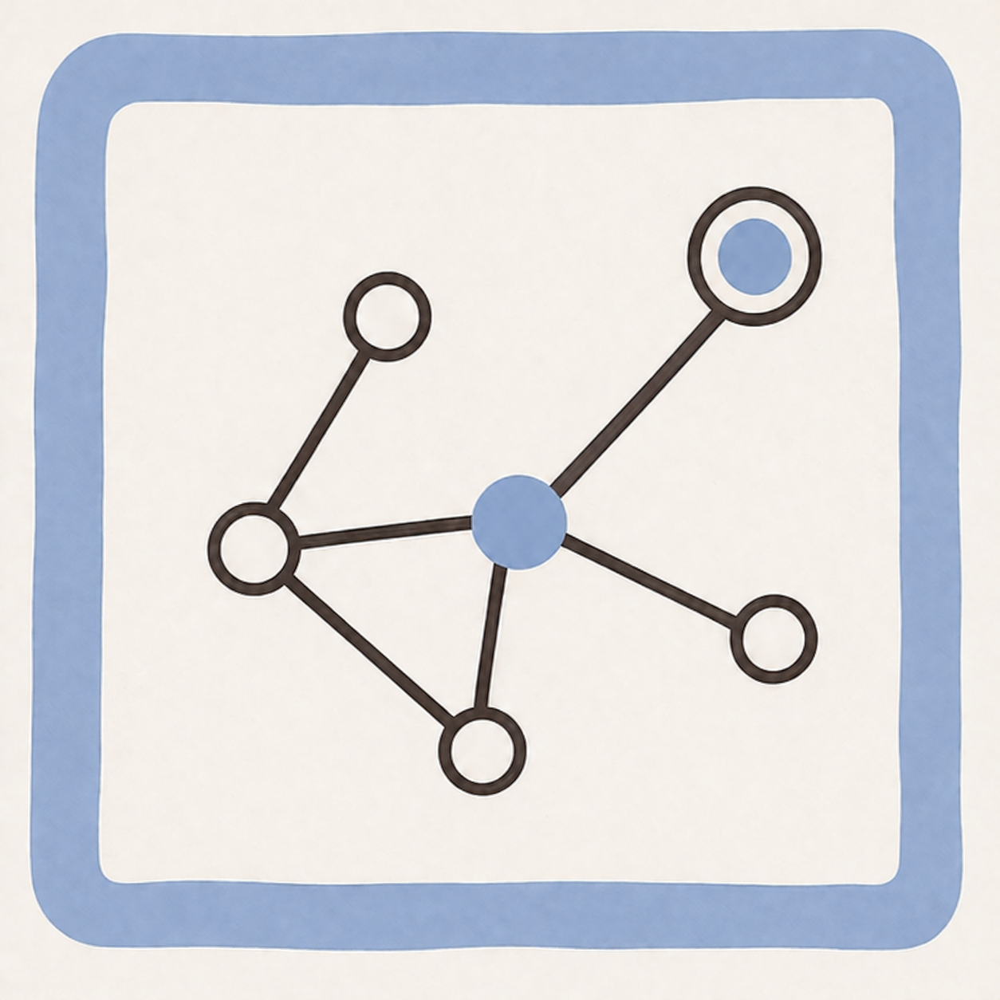

← All research

Route planning · Research paper
Lightweight Semantic-Aware Route Planning on Edge Hardware for Indoor Mobile Robots: Monocular Camera–2D LiDAR Fusion with Penalty-Weighted Nav2 Route Server Replanning
Published in Sensors 2026, 26, 2232 · doi.org/10.3390/s26072232
{{ stat.value }}
{{ stat.label }}
→{{ h }}
Authors
{{ sec.name }}
{{ sec.body }}
© 2026 SAIM Robotics. All rights reserved.